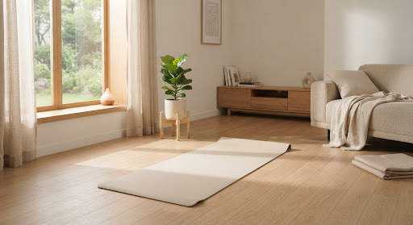
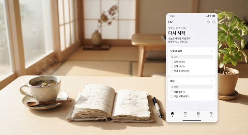

다시 시작
5일 쉬었어요. 오늘은 가볍게 해 볼까요?
평소 25분 루틴 대신 20분짜리로 줄였어요.

목·어깨 풀기 스트레칭 · 20분
앉아서 굳은 목 앞쪽을 늘려 줘요
중간에 멈춰도 "여기까지 했어요"로 남아요
야근이 적은 날 하나만 골라 두면 그날 할 운동으로 넣어 둘게요.
어젯밤 잠 · 오늘 몸 상태
7시간
좋음 (4)
매우 나쁨보통매우 좋음
나의 다짐
"야근한 날도 먹은 건 가볍게 남기기"
숫자 계산 없이 메뉴만 남겨요.
이번 주 운동
전체 보기
1번 했어요
월
화
수
목
금
토
일 · 오늘
검정은 한 날, 회색은 할 운동이에요. 쉰 날은 비워 둬요.

다음 주에 고른 날
아직 고르지 않았어요
왼쪽에서 요일을 누르면 목·어깨 풀기 20분이 그날 할 운동으로 들어가요.